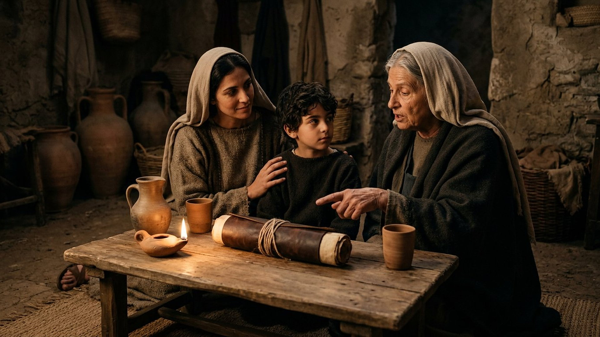
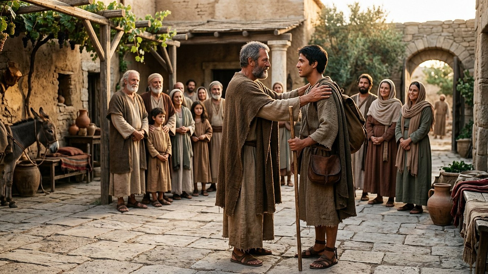
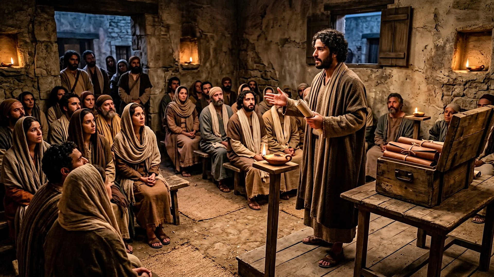

Salle 62 — Actes 16 · 1 et 2 Timothée ACCOMPLIE
Timothée : garder le dépôt
« Toi, demeure dans les choses que tu as apprises, et reconnues certaines, sachant de qui tu les as apprises. » — 2 Timothée 3:14 (d’après Segond 1910)
Reconstitution numérique — à Lystre, la foi de Loïs et d’Eunice précède les voyages : le futur compagnon de Paul est d’abord un enfant enseigné à la maison.
Le fils de Lystre, devenu l’homme de confiance
Quand Paul arrive à Lystre (translittération grecque : Lýstra), en Asie mineure, il y trouve un disciple « fils d’une femme juive fidèle et d’un père grec » : Timothée (translittération : Timótheos, « qui honore Dieu »). Les frères du lieu rendent de lui un bon témoignage ; Paul le prend avec lui, et le jeune homme devient le collaborateur le plus nommé des lettres — envoyé à Thessalonique, à Corinthe, à Philippes, associé dans les en-têtes de six lettres. La tradition des deux lettres qui portent son nom le montre ensuite chargé d’une communauté à Éphèse, recevant d’un Paul vieillissant conseils, avertissements et demandes personnelles. Dans la lecture retenue par ce musée, Timothée est la figure de la transmission : ce qu’il a reçu dans une maison de Lystre, puis sur les routes, il doit le garder sans le figer — « ce que tu as entendu de moi […], confie-le à des hommes fidèles, qui soient capables de l’enseigner aussi à d’autres » (2 Timothée 2:2).
Le musée présente ce portrait avec une honnêteté particulière : l’attribution des lettres dites « pastorales » à Paul lui-même est l’un des débats les plus anciens et les plus documentés de l’étude du Nouveau Testament. La salle expose ce débat ci-dessous, sans le trancher, et distingue le Timothée des Actes, compagnon historique, de la figure de destinataire construite par les lettres.
Le récit en cinq temps
D’une table de famille à la charge d’Éphèse, avancez d’une station à l’autre.

Le banc des preuves : des lettres très anciennes, un auteur débattu
DÉBATTU
L’attribution des « pastorales » à Paul : le débat des spécialistes (EV-71)
Vérifié : les deux lettres à Timothée et celle à Tite, dites « pastorales », sont transmises très tôt dans les grandes Bibles grecques — le Codex Sinaiticus du IVᵉ siècle (Bibliothèque britannique, Add MS 43725) les contient — et sont citées comme pauliniennes dès la fin du IIᵉ siècle. Débattu : depuis le XIXᵉ siècle, une grande partie de la recherche critique les attribue à un disciple de Paul écrivant en son nom après sa mort, en raison d’un vocabulaire statistiquement différent, d’une organisation communautaire plus structurée et d’un itinéraire difficile à loger dans les Actes ; d’autres spécialistes défendent l’authenticité, en invoquant notamment des secrétaires ou des situations nouvelles. La salle présente ce dossier en débat, et lit les lettres comme des témoins de la transmission — quelle que soit la main qui les a rédigées.
LECTURE PROPHÉTIQUE
« Ce que tu as entendu de moi » : quatre maillons en une phrase
2 Timothée 2:2 dessine, en une seule proposition, la chaîne que cette salle illustre : Paul enseigne, Timothée entend « en présence de beaucoup de témoins », des « hommes fidèles » reçoivent, et ceux-ci enseignent « aussi à d’autres ». Quatre générations de transmission sont énoncées avant même que les Évangiles soient tous rédigés. Le musée y voit le programme de son propre banc des preuves : un dépôt ne survit que s’il est confié, c’est-à-dire à la fois gardé et remis — la fidélité comme relais, non comme coffre scellé.
DÉBATTU
Éphèse, les « jeunes veuves » et l’Église des lettres pastorales
Les lettres à Timothée décrivent une communauté aux contours débattus : des responsables aux titres plus formels (surveillants, anciens, serviteurs — en grec, translittérations : epískopoi, presbýteroi, diákonoi), des listes de veuves secourues, des adversaires qui « s’introduisent dans les maisons ». Les historiens débattent de cette photographie : reflète-t-elle l’Éphèse de Paul vers la fin de sa vie (années 60), ou l’organisation des communautés une génération plus tard ? Les recommandations concrètes — salutations, manteau et parchemins demandés « avant l’hiver » (2 Timothée 4:13) — nourrissent les deux lectures, personnelles pour les uns, mises en scène d’école pour les autres.
Quatre clés pour bien lire les lettres à Timothée
1. Un dépôt, pas un musée
Le mot grec traduit « dépôt » (translittération : parathḗkē) appartient au droit des consignes : on dépose un bien chez quelqu’un, qui devra le restituer intact — mais la métaphore filée par les lettres exige plus qu’un gardiennage : raviver le don (1:6), ne pas avoir honte du témoignage (1:8), transmettre à des enseignants (2:2). Garder le dépôt, chez Timothée, est un verbe d’action : ce qui est seulement conservé sans être annoncé est déjà perdu.
2. La foi vient par les femmes de la maison
Avant les apôtres, il y a une grand-mère et une mère : la « foi sincère » habite d’abord Loïs, puis Eunice, puis Timothée (2 Timothée 1:5), et l’enfant connaît « dès son enfance les saintes lettres » (3:15). Dans une salle voisine, Marie de Magdala portait l’annonce aux apôtres (salle 60) ; ici, deux femmes sans titre forment le futur envoyé. Le musée souligne cette pédagogie domestique, qui traverse le livre des Actes — de Lydie de Philippes aux maisons-églises des lettres.
3. « Que personne ne méprise ta jeunesse »
La recommandation de 1 Timothée 4:12 vise un envoyé encore jeune chargé de lire publiquement, d’enseigner et de corriger — y compris des anciens. Les lettres entourent cette autorité fragile de conseils de conduite : fuir les passions, poursuivre la justice, être « un modèle pour les fidèles, en parole, en conduite, en amour, en foi, en pureté ». La salle retient la tension : Timothée n’est ni un chef installé ni un simple coursier, mais un jeune responsable dont la légitimité se joue dans les manières avant les titres.
4. Le dernier Paul des lettres demande un manteau
Que l’on lise 2 Timothée comme testament de Paul ou comme portrait posthume, sa fin est délibérément modeste : l’homme qui a traversé l’Empire demande à son fils spirituel de venir « avant l’hiver », d’apporter le manteau laissé à Troas (translittération : Trōás), les livres et « surtout les parchemins », et de venir avec Marc (translittération : Márkos), « car il m’est utile pour le ministère ». À côté de la grande phrase sur la transmission, la salle expose ces demandes d’intendance : la garde du dépôt a toujours eu besoin de manteaux, de routes et de compagnons.
Prescience n’est pas fatalité — recevoir n’est pas répéter
Timothée hérite de tout : une foi, un maître, une réputation à porter, un dépôt à transmettre. Rien de ce qui suit n’est automatique : les lettres le supplient de raviver, de ne pas rougir, de choisir ses relais, de venir avant l’hiver. L’héritier peut laisser refroidir le don ; il peut aussi, librement, le remettre en circulation. Entre Lystre et Éphèse, le récit montre qu’une fidélité n’est vivante que si elle est réappropriée — gardée assez bien pour être donnée.

Salle 61 : Paul à Rome, le maître dont Timothée garde le dépôt · Salle 45 : la génération d’avant, celle des apôtres témoins · Salle 60 : une autre transmission, par une femme messagère
Écouter la salle
Transcription de la narration
Bienvenue dans cette nouvelle salle. Vous verrez d’abord une maison ancienne éclairée par une lampe, un enfant entouré de sa mère et de sa grand-mère, puis une cour ensoleillée et une petite assemblée du soir. Je vous souhaite une très bonne visite du musée. La visite avance en cinq étapes courtes. Prenez le temps d’observer chaque image et de lire les panneaux : ils présentent une foi transmise en famille, un envoi, puis des questions que les spécialistes débattent encore sur des lettres anciennes. Merci de votre attention.